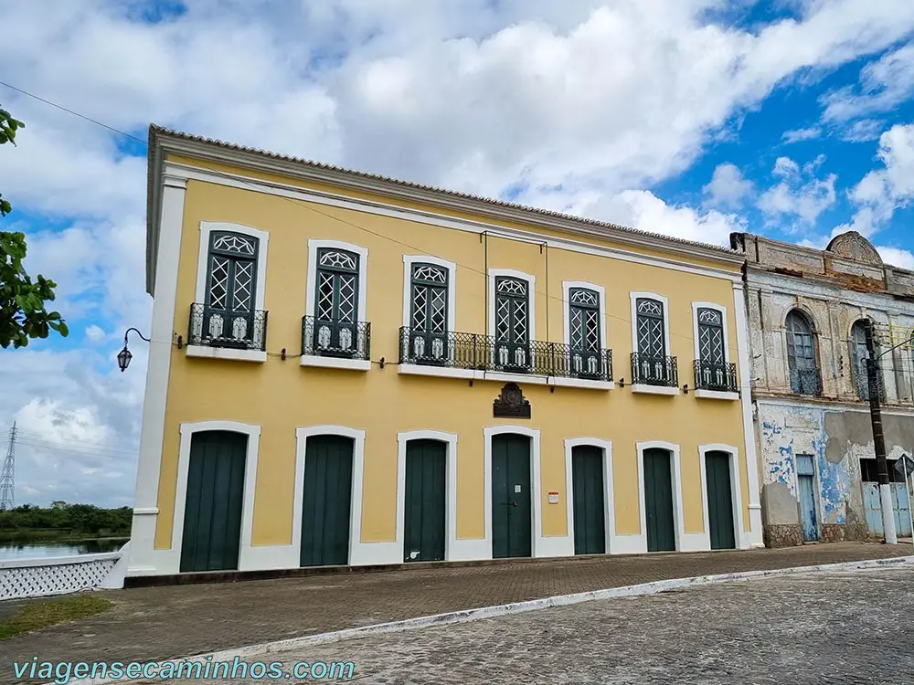
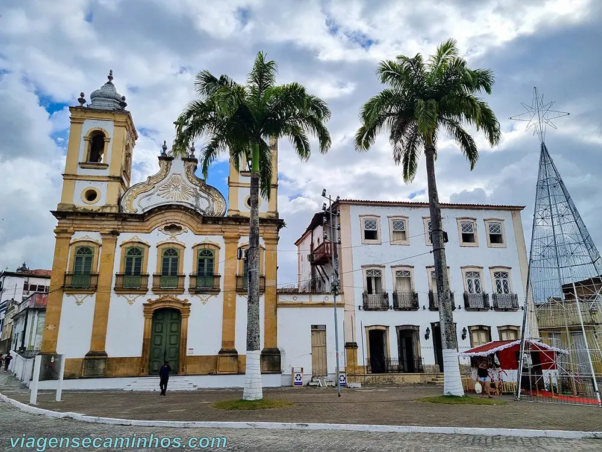
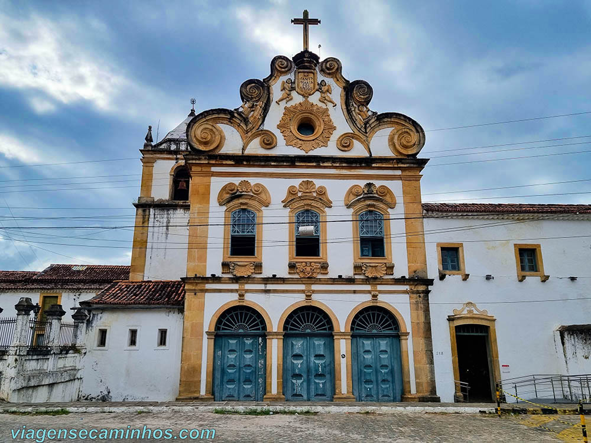

Sobre a cidade de Penedo...
É uma cidade histórica do estado de Alagoas, localizada às margens do Rio São Francisco.
Fundada em 1535, é uma das cidades mais antigas do Brasil, reconhecida
por sua rica herança cultural e arquitetônica.
A cidade de Penedo AL mantém inúmeras construções com o charme do estilo colonial, casarões coloridos cheios de detalhes arquitetônicos, igrejas centenárias e ruas de paralelepípedos.
A lista do que fazer em Penedo combina história, cultura e arquitetura, aliados com a beleza natural do Rio São Francisco, oferecendo variadas opções no coração de Alagoas.
1. Museu do Paço Imperial

Situado na Praça Doze de Abril, ao lado da Igreja N.S. da Corrente, o Museu do Paço Imperial guarda belas relíquias em seu interior, incluindo a história da visita do Imperador Dom Pedro II, à cidade de Penedo AL. O museu é uma verdadeira aula de história sobre as origens e sobre os personagens que ajudaram construir a cidade de Penedo AL.
2. Igreja Nossa Senhora das Correntes

A Igreja Nossa Senhora da Corrente, é a construção que mais chama atenção, já de longe, para quem está chegando em Penedo pelo Rio São Francisco. Foi iniciada em 1764 e concluída somente por volta de 1790.
Com belos traços arquitetônicos e bom estado de conservação, é uma verdadeira obra de arte dos estilos barroco e rococó. Por dentro, possui azulejos portugueses em policromia, juntamente com o altar-mor que possui lindos detalhes folheados a ouro.
3. Convento Nossa Senhora dos Anjos

Com sua construção iniciada em 1660 e concluída em 1759, quase um século depois, a igreja do convento é mais uma das grandes construções em estilo barroco, sendo um dos principais pontos turísticos em Penedo, Alagoas.
O convento franciscano localizado no centro da cidade, possui bela arquitetura com riqueza de detalhes. O altar-mor é pintado com ouro misturado a óleo de baleia e clara de ovo e há afrescos espalhados por toda a igreja.